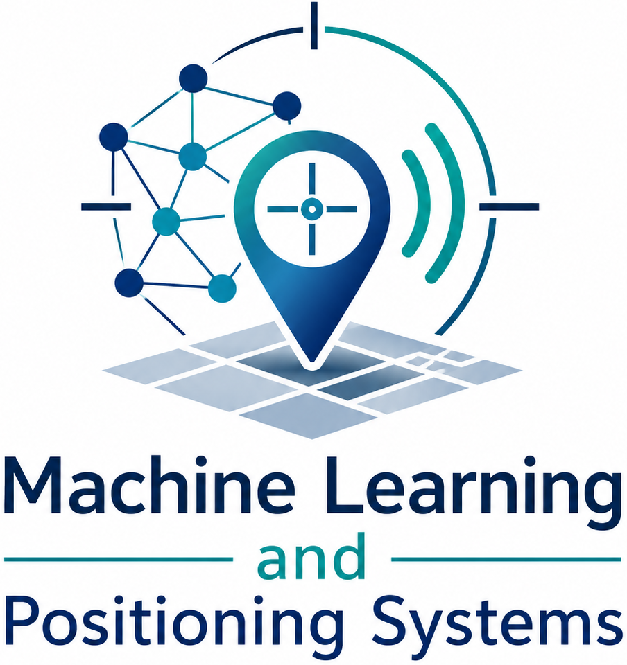
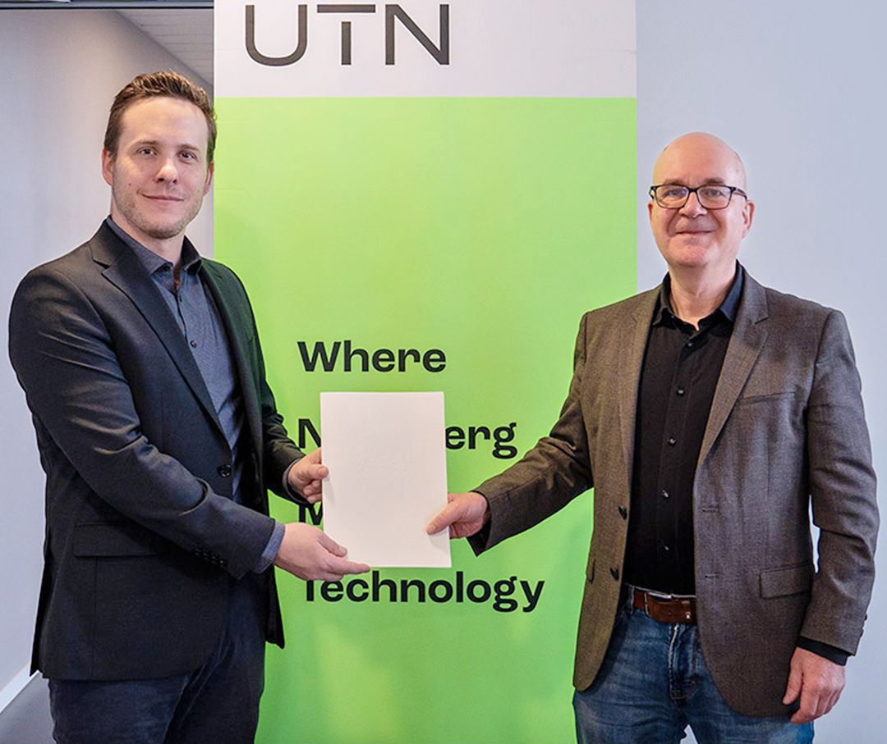

Machine Learning and Positioning Systems Lab
We develop intelligent, reliable, and resource-efficient learning systems combining signal processing, artificial intelligence, and autonomous decision-making for real-world and industrial applications. Our research focuses on three core areas:
- Signal Processing for Localization and Sensing: We develop data-driven methods for localization, tracking, motion prediction, and multimodal sensor fusion, emphasizing self-supervised learning and integrated sensing and communication for 6G and beyond.
- Edge AI and Resource-Efficient Learning: We design accurate, memory- and energy-efficient learning algorithms for resource-constrained devices, including embedded systems and microcontrollers.
- Reliable and Trustworthy Reinforcement Learning: We develop safe, stable, and interpretable reinforcement learning methods for uncertain, industrial, and safety-critical environments.
You can find more about our research here.

Latest News
-
Best Paper Award at IPIN 2026 in Rome!
At IPIN 2026 the MLPS Lab has 5 papers accepted and won the best paper award for “ChronoChart: Setup-Agnostic Channel Charting for Label-Free Indoor Localization”. Thanks to all the co-authors from Fraunhofer IIS and FAU Erlangen-Nürnberg!

-
Welcome to the lab, Jonathan and Alex!
Starting June 1 Jonathan and Alex will join MLPS lab. Jonathan works on representation learning for wireless channels and Alex works on Constrained Reinforcement Learning.
-
We start our lab!
Chris has been appointed full professor of Machine Learning and Positioning Systems at the University of Technology Nuremberg (UTN).
